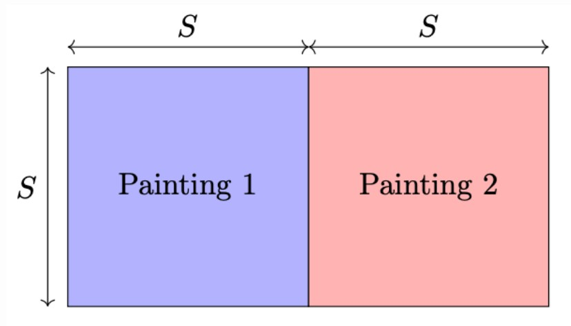
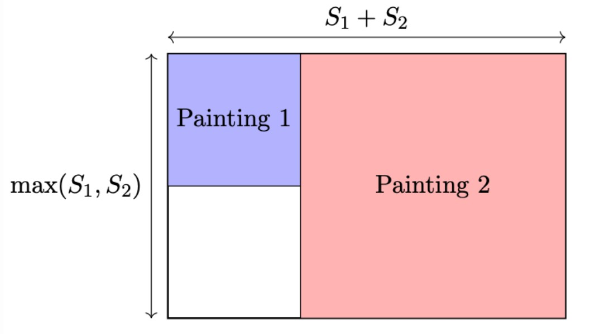

The perimeter of a rectangle is 2(H + L) where H and L are the height and length of the rectangle.
Subtask 1
In this subtask, both squares are congruent. Let the side length of the paintings be S. An optimal configuration for
all such cases is shown below.

Here, we see that the length of the rectangle with the smallest perimeter that encloses the two paintings has height
of S and length of 2S. This means that the perimeter is 2(2S + S) = 6S. Subtask 2 For this subtask, we have two squares.
Let the side lengths of the paintings be S1 and S2 for Painting 1 and Painting 2, respectively. The best configuration
is to put them side by side. An example of the optimal configuration is shown below.

Here, we see that the perimeter of the rectangle with the smallest perimeter that encloses the two paintings has a height
of max(S1, S2) and length of S1 + S2. Thus, we see that the answer is 2(S1 + S2 + max(S1, S2)). Subtask 3 For the last
subtask, assume Painting 1 has a length of A and a height of B and Painting 2 has a length of X and a height of Y. Like
in previous subtasks, the optimal configuration may be to put them side by side. However, there may be another case of
stacking one painting on top of another painting. As such, we will take the minimum perimeter of each case. Placed side
by side: The best enclosed rectangle has a height of max(B,Y) and a length of A+ X. Hence, the perimeter is 2(max(B,Y) + A + X).
Stacked on top of each other: The best enclosed rectangle has a height of B+ Y and a length of max(A, X). Hence, the
perimeter is 2(max(B,Y) + A + X). Thus, the answer is min(2(max(B, Y) + A + X), 2(max(A, X) + B + Y))
Solution Code
#include<bits/stdc++.h>
using namespace std;
int main(){
long long a,b,x,y;
cin>>a>>b>>x>>y;
long long a1=2*(max(b,y)+a+x);
long long a2=2*(max(a,x)+b+y);
cout<<min(a1,a2);
return 0;
}